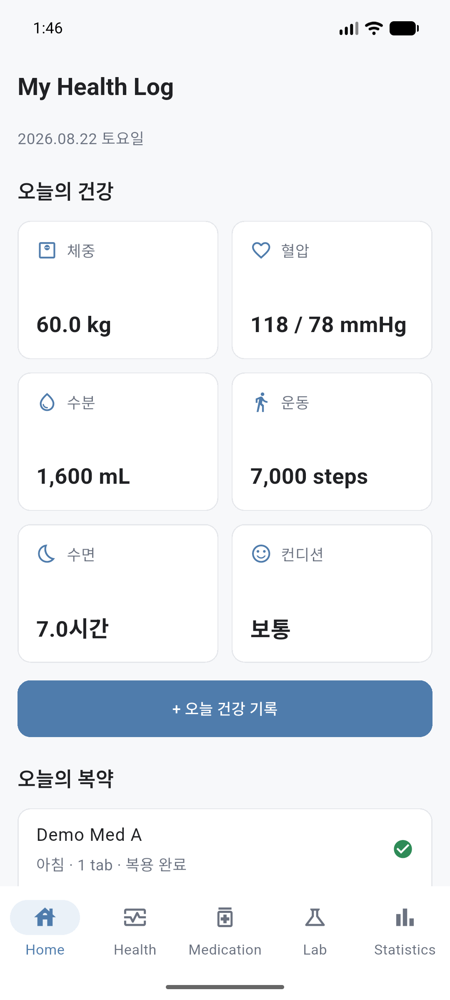

사용자 문제와 검증 방향
반복 입력에서 수치가 잘리거나, 복약 기록의 의미가 바뀌거나, 백업에서 설정이 빠지면 사용자는 기록을 신뢰하기 어렵습니다. 기능이 있다는 사실보다 실제 사용 조건에서 값과 과거 기록이 유지되는지를 확인했습니다.
- 입력값과 표시값의 일치
- 정기 복약과 필요 시 복약(PRN)의 구분
- 복원 후 데이터와 설정의 보존
개인 QA 사례 · Android 실사용과 반복 검수
건강 기록 앱을 실제로 사용하며 입력과 기록 보존의 문제를 발견했습니다. 요구사항과 우선순위를 정하고, AI/Codex의 구현 결과를 검수하며 개선 후 기존 동작도 함께 확인한 QA 사례입니다.
Projects로 돌아가기
반복 입력에서 수치가 잘리거나, 복약 기록의 의미가 바뀌거나, 백업에서 설정이 빠지면 사용자는 기록을 신뢰하기 어렵습니다. 기능이 있다는 사실보다 실제 사용 조건에서 값과 과거 기록이 유지되는지를 확인했습니다.
사례 01 · V3.4.0 · 2026-08-30 기록
범위: 직접 입력과 알려진 검사명 대응. 단위 변환이나 임의의 유사 이름 추정은 포함하지 않습니다.
사례 02 · V3.5.0 · 2026-08-30 기록
실기기 확인은 기존 데이터를 보호한 화면 smoke 범위입니다. 과거 기록의 파괴적 저장을 모두 실기기에서 검증했다고 표현하지 않습니다.
사례 03 · V3.6.0 · 2026-08-31 기록
실기기 근거는 설정 복원과 기존 데이터 존재 확인 범위입니다. 모든 개인 데이터를 삭제한 뒤 전체 복원하는 실험과는 구분합니다.
| 사례 | 자동 회귀 · AI/Codex 중심 | 원본 실기기 QA 기록 범위 |
|---|---|---|
| 검사 입력 | 전체 문자열·저장값·명시적 이름 대응·기존 행 보존 | 소수·정수 입력 표시, 알려진 이름의 통계 반영 |
| PRN 기록 | 미기록일 미표시·추가 기록·편집 시 관계 보존 | Home 당일 표시, 과거 기록 편집 화면 smoke |
| 백업/복원 | 설정 왕복·구형 호환·잘못된 파일 거부·롤백 | 설정 복원·재실행 유지·기존 데이터 존재 |
기능별 반복 검증과 Android 실기기 확인을 구분해 기록했습니다. 자동 테스트 수치를 본인의 코딩 실적으로 제시하지 않습니다.
아래는 2026-08-22에 V1.0.0 UI와 데모 데이터를 사용해 포트폴리오 에뮬레이터에서 촬영한 실제 앱 화면입니다. 개인 건강정보와 목업은 포함하지 않았으며, 위 V3 개선 사례의 최신 화면이나 재검증 증거는 아닙니다.
Android / Flutter와 로컬 SQLite 기반입니다. 저장값, 화면 표시, 과거 기록과 백업 설정의 관계를 검증 대상으로 삼았습니다. 구현 구조보다 변경이 사용자 기록에 미치는 영향을 중심으로 범위를 정했습니다.
사례의 기준은 V3.4~V3.6 원본 QA·변경 기록입니다. 검사 사진 입력과 혈압·체중 사진 인식은 이 세 사례의 검증 범위에 포함하지 않았습니다. iOS 출시나 의료적 판단 기능을 제시하지 않습니다.
실사용 문제를 요구사항으로 바꾸고, 개선된 기능과 기존 동작을 함께 확인하는 경험을 쌓았습니다. 실행 환경과 데이터 보호로 확인하지 못한 범위도 결과에 남기는 것을 중요하게 생각합니다.